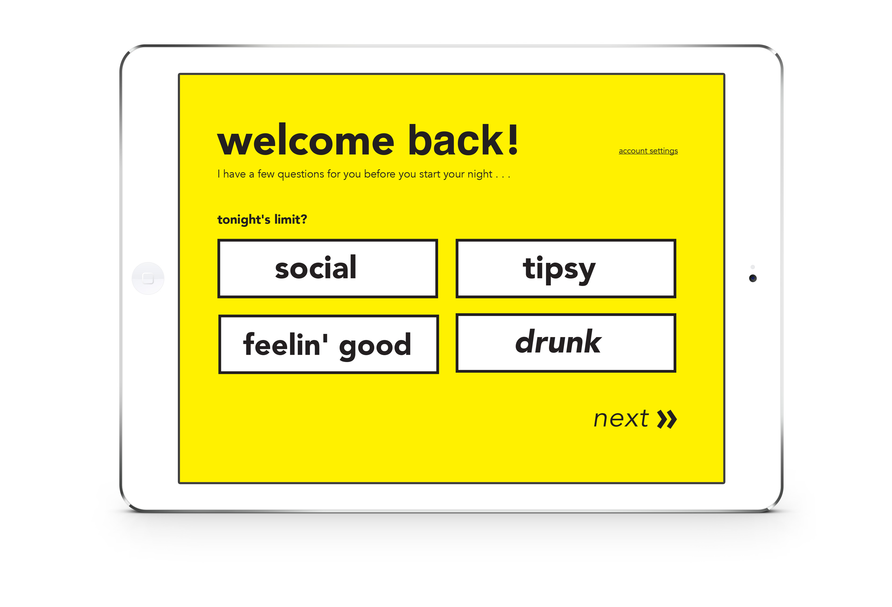
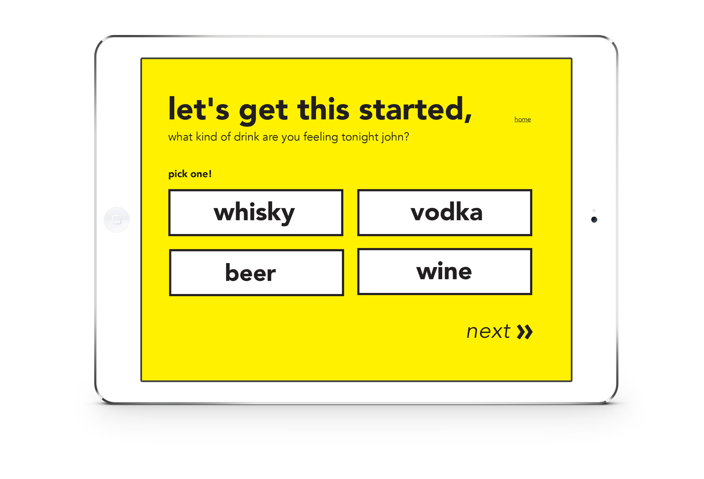
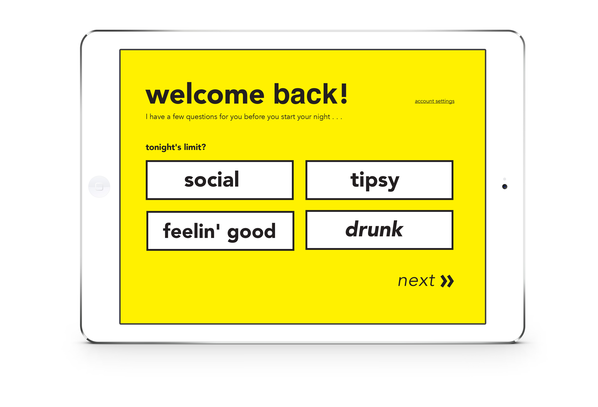
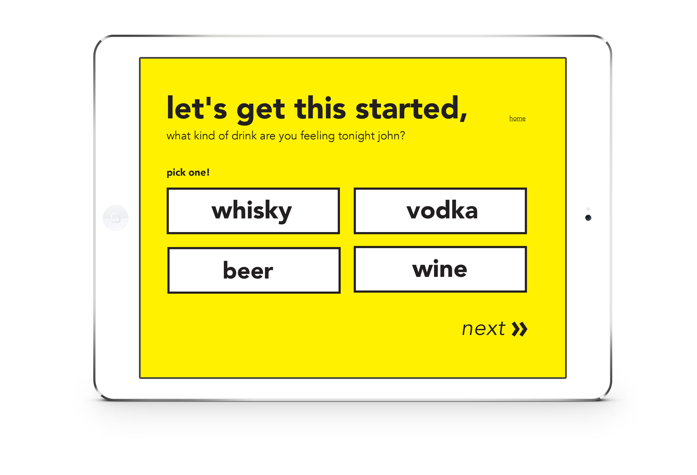

– Why we created Sip
We wanted to make an at home bartending system that serves drinks according to the user's BAC. 62,000 men & 26,000 women die annually from alcohol related deaths. This makes alcohol the 4th leading preventable cause of death in America. By creating a system that controls the amount of substances entering the body, we lessen the chance of putting yourself or others in danger during.
 



– What is a BAC?
A persons BAC is the blood alcohol ratio. Depending on weight, height, and drinking habits the BAC can tell you the scientific calculation of intoxication. It can also tell you how long it will take you to be sober as well as when you can drive. Watching your BAC during drinking keeps you aware and understand how drunk you actually are. Sip watches your BAC for you, so you don't have to.
things that we consider when calculating your body's alcohol tolerance:
What kind of drinker are you?
Gender?
Weight?
Height?
– The machine
The personal machine caters to you. By scaning your finger, it allows your to enter your information once and Sip will remember your BAC ( Blood Alcohol Content ). To recieve another drink, a breathalyzer test is required. This is how Sip knows your level of intoxication. If the BAC number is too high, Sip will not pour another drink until it is safe to drink more. To make sure you don't end up feeling sick at the end of the night, the type of alcohol is controled. Also, Sip is synced with your Uber or Lyft account. When you're ready to leave the house, your car will be ready. Sip insures safe drinking as well a taking care of your drinking needs. As the night goes on, it becomes harder to look at screens or anything digital espeically after a few glasses. Sip will re-adjust button and type size according to your intoxication level. This helps you see the options of Sip without straining your eyes or even misreading!
– See for yourself
Introduction to the application.